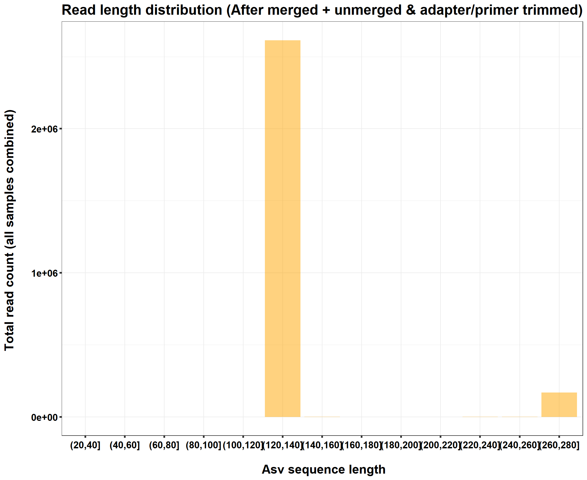

Last updated: 2022-08-08
Checks: 7 0
Knit directory: Miseq_analysis/
This reproducible R Markdown analysis was created with workflowr (version 1.6.2). The Checks tab describes the reproducibility checks that were applied when the results were created. The Past versions tab lists the development history.
Great! Since the R Markdown file has been committed to the Git repository, you know the exact version of the code that produced these results.
Great job! The global environment was empty. Objects defined in the global environment can affect the analysis in your R Markdown file in unknown ways. For reproduciblity it’s best to always run the code in an empty environment.
The command set.seed(20220728) was run prior to running
the code in the R Markdown file. Setting a seed ensures that any results
that rely on randomness, e.g. subsampling or permutations, are
reproducible.
Great job! Recording the operating system, R version, and package versions is critical for reproducibility.
Nice! There were no cached chunks for this analysis, so you can be confident that you successfully produced the results during this run.
Great job! Using relative paths to the files within your workflowr project makes it easier to run your code on other machines.
Great! You are using Git for version control. Tracking code development and connecting the code version to the results is critical for reproducibility.
The results in this page were generated with repository version 8b17cd3. See the Past versions tab to see a history of the changes made to the R Markdown and HTML files.
Note that you need to be careful to ensure that all relevant files for
the analysis have been committed to Git prior to generating the results
(you can use wflow_publish or
wflow_git_commit). workflowr only checks the R Markdown
file, but you know if there are other scripts or data files that it
depends on. Below is the status of the Git repository when the results
were generated:
Ignored files:
Ignored: .Rhistory
Ignored: .Rproj.user/
Untracked files:
Untracked: Rplot.pdf
Untracked: Rplot01.pdf
Untracked: data/220726_Miseq_micro_v2/
Note that any generated files, e.g. HTML, png, CSS, etc., are not included in this status report because it is ok for generated content to have uncommitted changes.
These are the previous versions of the repository in which changes were
made to the R Markdown
(analysis/220805_effect_of_primer_trimming.Rmd) and HTML
(docs/220805_effect_of_primer_trimming.html) files. If
you’ve configured a remote Git repository (see
?wflow_git_remote), click on the hyperlinks in the table
below to view the files as they were in that past version.
| File | Version | Author | Date | Message |
|---|---|---|---|---|
| Rmd | 8b17cd3 | Kiseok Lee | 2022-08-08 | wflow_publish("analysis/*.Rmd") |
Researcher & Analysis: Kiseok Lee
Experiment Date: 6/10/22 - 6/17/22 (5 day each)
Analysis Date: 8/5/21
Lab: Seppe Kuehn at UChicago
# libraries
library(phyloseq)
library(dplyr)
library(ggplot2)
library(RColorBrewer)
library(vegan)
library(tidyverse)
library(magrittr)
library(readxl)
library(reshape2)
library(gtools)
library(devtools)
library(openxlsx)
library(ape)
library(stringr)
library(tidyr)
library(ggrepel)
library(ggpubr)
library(scales)
require(gridExtra)
library(grid)
library(agricolae)
library(BiocManager)
# do I need these?
#library(seqtime)
# BiocManager::install("seqtime")
library(metagenomeSeq)
# BiocManager::install("metagenomeSeq", version = "3.12")
# color collection
my_color_collection <- c(
"#CBD588", "#5F7FC7", "orange", "#AD6F3B", "#673770",
"#D14285", "#652926", "#C84248", "#8569D5", "#5E738F",
"#D1A33D", "#8A7C64", "#599861","#616163", "#FFCDB2",
"#6D9F71", "#242F40",
"#CCA43B", "#F92A82", "#ED7B84", "#7EB77F",
"#DEC4A1", "#E5D1D0", '#0E8482', '#C9DAEA', '#337357',
'#95C623', '#E55812', '#04471C', '#F2D7EE', '#D3BCC0',
'#A5668B', '#69306D', '#0E103D', '#1A535C', '#4ECDC4',
'#F7FFF7', '#FF6B6B', '#FFE66D', '#6699CC', '#FFF275',
'#FF8C42', '#FF3C38', '#A23E48', '#000000', '#CF5C36',
'#EEE5E9', '#7C7C7C', '#EFC88B', '#2E5266', '#6E8898',
'#9FB1BC', '#D3D0CB', '#E2C044', '#5BC0EB', '#FDE74C',
'#9BC53D', '#E55934', '#FA7921', "#CD9BCD", "#508578", "#DA5724")
## theme for ggplot
mytheme <- theme_bw() +
theme(text = element_text(face="bold", colour = 'black'),
plot.title = element_text(size = 19,hjust = 0.5,face="bold", colour = 'black'),
axis.title.x = element_text(size = 17,hjust = 0.5,face="bold", colour = 'black'),
axis.title.y = element_text(size = 17,hjust = 0.5,face="bold", colour = 'black'),
axis.text.x = element_text(hjust = 0.5, vjust=0.3,size=13,face="bold", colour = 'black'),
axis.text.y = element_text(size=13,face="bold", colour = 'black'),
panel.grid.major = element_blank(),
panel.grid.minor = element_blank(),panel.background=element_blank(),panel.border=element_blank(),plot.background=element_blank(),
axis.ticks = element_line(size = 1.1),
legend.text=element_text(size=10,face="bold", colour = 'black'))
mytheme_2d <- theme_bw() +
theme(text = element_text(face="bold", colour = 'black'),
plot.title = element_text(size = 19,hjust = 0.5,face="bold", colour = 'black'),
axis.title.x = element_text(size = 17,hjust = 0.5,face="bold", colour = 'black'),
axis.title.y = element_text(size = 17,hjust = 0.5,face="bold", colour = 'black'),
axis.text.x = element_text(hjust = 0.5, vjust=0.3,size=13,face="bold", colour = 'black'),
axis.text.y = element_text(size=13,face="bold", colour = 'black'),
axis.ticks = element_line(size = 1.1),
legend.text=element_text(size=10,face="bold", colour = 'black'),
# panel.grid.major = element_blank(),
panel.background=element_blank(),plot.background=element_blank()
)
# theme(panel.grid.major = element_blank()) +
# theme(panel.grid.minor = element_blank(),panel.background=element_blank(),plot.background=element_blank())
# for git push, use this instead of using wflow_git_push()
# git push -u origin master (in the Git app / in the working directory)
# for making pdf file
# library(rmarkdown)
# render("analysis/~~.Rmd", "pdf_document")Before: pear merge, no trimming of adapter and primer After: trim primer then dada2 denoise-paired
## 1. Import "before file"
# We can then load the biom file with phyloseq function import_biom. We extract the OTU table with OTU abundances and the taxonomy table from the resulting phyloseq object.
bac_phylo=import_biom("data/220726_Miseq_micro_v2/merged/asv_table_final.biom")
# in metadata erase # (This step is essential)
map <- read.table(file = 'data/220726_Miseq_micro_v2/merged/sample_metadata_without_hashtag.tsv', sep = '\t', header = TRUE)
map <- sample_data(map)
# Assign rownames to be Sample ID's
map$SampleID [1] "SampleA1" "SampleA14" "SampleA26" "SampleA38" "SampleA50" "SampleA62"
[7] "SampleA74" "SampleA86" "SampleA3" "SampleA15" "SampleA27" "SampleA13"
[13] "SampleA39" "SampleA51" "SampleA63" "SampleA75" "SampleA87" "SampleA4"
[19] "SampleA16" "SampleA28" "SampleA40" "SampleA52" "SampleA25" "SampleA64"
[25] "SampleA76" "SampleA88" "SampleA5" "SampleA17" "SampleA29" "SampleA41"
[31] "SampleA53" "SampleA65" "SampleA77" "SampleA37" "SampleA49" "SampleA61"
[37] "SampleA73" "SampleA85" "SampleA2" rownames(map) <- map$SampleID
rownames(map) [1] "SampleA1" "SampleA14" "SampleA26" "SampleA38" "SampleA50" "SampleA62"
[7] "SampleA74" "SampleA86" "SampleA3" "SampleA15" "SampleA27" "SampleA13"
[13] "SampleA39" "SampleA51" "SampleA63" "SampleA75" "SampleA87" "SampleA4"
[19] "SampleA16" "SampleA28" "SampleA40" "SampleA52" "SampleA25" "SampleA64"
[25] "SampleA76" "SampleA88" "SampleA5" "SampleA17" "SampleA29" "SampleA41"
[31] "SampleA53" "SampleA65" "SampleA77" "SampleA37" "SampleA49" "SampleA61"
[37] "SampleA73" "SampleA85" "SampleA2" dim(map)[1] 39 12# Merge biom data object with sample metadata + tree data(this is rooted!)
phy_tree = read_tree("data/220726_Miseq_micro_v2/merged/rooted_tree.nwk")
phy_notrim <- merge_phyloseq(bac_phylo, map, phy_tree)
phy_notrim # 6343 OTUs (asv)phyloseq-class experiment-level object
otu_table() OTU Table: [ 6343 taxa and 39 samples ]
sample_data() Sample Data: [ 39 samples by 12 sample variables ]
tax_table() Taxonomy Table: [ 6343 taxa by 7 taxonomic ranks ]
phy_tree() Phylogenetic Tree: [ 6343 tips and 6342 internal nodes ]lab <- c('Barneveld2_T0', 'Barneveld2_T9_H0', 'Barneveld2_T9_H0_CHL', 'Barneveld2_T9_OH10', 'Barneveld2_T9_OH10_CHL', 'LaBaghWoods1_T0', 'LaBaghWoods1_T9_H0', 'LaBaghWoods1_T9_H0_CHL', 'LaBaghWoods1_T9_OH8', 'LaBaghWoods1_T9_OH8_CHL', 'PMA_Barneveld2_T0', 'PMA_Barneveld2_T9_H0', 'PMA_Barneveld2_T9_H0_CHL', 'PMA_Barneveld2_T9_OH10', 'PMA_Barneveld2_T9_OH10_CHL', 'Negative', 'Positive')
sample_data(phy_notrim)$Sample_name <- factor(sample_data(phy_notrim)$Sample_name, levels =lab)
## 2. Import "after file"
# We can then load the biom file with phyloseq function import_biom. We extract the OTU table with OTU abundances and the taxonomy table from the resulting phyloseq object.
bac_phylo=import_biom("data/220726_Miseq_micro_v2/primer_trimmed/asv_table_final.biom")
# in metadata erase # (This step is essential)
map <- read.table(file = 'data/220726_Miseq_micro_v2/primer_trimmed/sample_metadata_without_hashtag.tsv', sep = '\t', header = TRUE)
map <- sample_data(map)
# Assign rownames to be Sample ID's
map$SampleID [1] "SampleA1" "SampleA14" "SampleA26" "SampleA38" "SampleA50" "SampleA62"
[7] "SampleA74" "SampleA86" "SampleA3" "SampleA15" "SampleA27" "SampleA13"
[13] "SampleA39" "SampleA51" "SampleA63" "SampleA75" "SampleA87" "SampleA4"
[19] "SampleA16" "SampleA28" "SampleA40" "SampleA52" "SampleA25" "SampleA64"
[25] "SampleA76" "SampleA88" "SampleA5" "SampleA17" "SampleA29" "SampleA41"
[31] "SampleA53" "SampleA65" "SampleA77" "SampleA37" "SampleA49" "SampleA61"
[37] "SampleA73" "SampleA85" "SampleA2" rownames(map) <- map$SampleID
rownames(map) [1] "SampleA1" "SampleA14" "SampleA26" "SampleA38" "SampleA50" "SampleA62"
[7] "SampleA74" "SampleA86" "SampleA3" "SampleA15" "SampleA27" "SampleA13"
[13] "SampleA39" "SampleA51" "SampleA63" "SampleA75" "SampleA87" "SampleA4"
[19] "SampleA16" "SampleA28" "SampleA40" "SampleA52" "SampleA25" "SampleA64"
[25] "SampleA76" "SampleA88" "SampleA5" "SampleA17" "SampleA29" "SampleA41"
[31] "SampleA53" "SampleA65" "SampleA77" "SampleA37" "SampleA49" "SampleA61"
[37] "SampleA73" "SampleA85" "SampleA2" dim(map)[1] 39 12# Merge biom data object with sample metadata + tree data(this is rooted!)
phy_tree = read_tree("data/220726_Miseq_micro_v2/primer_trimmed/rooted_tree.nwk")
phy_trimmed <- merge_phyloseq(bac_phylo, map, phy_tree)
phy_trimmed # 1527 OTUs (asv)phyloseq-class experiment-level object
otu_table() OTU Table: [ 1527 taxa and 39 samples ]
sample_data() Sample Data: [ 39 samples by 12 sample variables ]
tax_table() Taxonomy Table: [ 1527 taxa by 7 taxonomic ranks ]
phy_tree() Phylogenetic Tree: [ 1527 tips and 1524 internal nodes ]sample_data(phy_trimmed)$Sample_name <- factor(sample_data(phy_trimmed)$Sample_name, levels =lab)
## 2.1. Import "after merged & trimmed file"
# We can then load the biom file with phyloseq function import_biom. We extract the OTU table with OTU abundances and the taxonomy table from the resulting phyloseq object.
bac_phylo=import_biom("data/220726_Miseq_micro_v2/220805_Soil_pH_adaptation_ver3/04_dada2/merged/asv_table_final.biom")
# in metadata erase # (This step is essential)
map <- read.table(file = 'data/220726_Miseq_micro_v2/primer_trimmed/sample_metadata_without_hashtag.tsv', sep = '\t', header = TRUE)
map <- sample_data(map)
# Assign rownames to be Sample ID's
map$SampleID [1] "SampleA1" "SampleA14" "SampleA26" "SampleA38" "SampleA50" "SampleA62"
[7] "SampleA74" "SampleA86" "SampleA3" "SampleA15" "SampleA27" "SampleA13"
[13] "SampleA39" "SampleA51" "SampleA63" "SampleA75" "SampleA87" "SampleA4"
[19] "SampleA16" "SampleA28" "SampleA40" "SampleA52" "SampleA25" "SampleA64"
[25] "SampleA76" "SampleA88" "SampleA5" "SampleA17" "SampleA29" "SampleA41"
[31] "SampleA53" "SampleA65" "SampleA77" "SampleA37" "SampleA49" "SampleA61"
[37] "SampleA73" "SampleA85" "SampleA2" rownames(map) <- map$SampleID
rownames(map) [1] "SampleA1" "SampleA14" "SampleA26" "SampleA38" "SampleA50" "SampleA62"
[7] "SampleA74" "SampleA86" "SampleA3" "SampleA15" "SampleA27" "SampleA13"
[13] "SampleA39" "SampleA51" "SampleA63" "SampleA75" "SampleA87" "SampleA4"
[19] "SampleA16" "SampleA28" "SampleA40" "SampleA52" "SampleA25" "SampleA64"
[25] "SampleA76" "SampleA88" "SampleA5" "SampleA17" "SampleA29" "SampleA41"
[31] "SampleA53" "SampleA65" "SampleA77" "SampleA37" "SampleA49" "SampleA61"
[37] "SampleA73" "SampleA85" "SampleA2" dim(map)[1] 39 12# Merge biom data object with sample metadata + tree data(this is rooted!)
phy_tree = read_tree("data/220726_Miseq_micro_v2/220805_Soil_pH_adaptation_ver3/04_dada2/merged/rooted_tree.nwk")
phy_mergetrimmed <- merge_phyloseq(bac_phylo, map, phy_tree)
phy_mergetrimmed # 3709 OTUs (asv)phyloseq-class experiment-level object
otu_table() OTU Table: [ 3709 taxa and 39 samples ]
sample_data() Sample Data: [ 39 samples by 12 sample variables ]
tax_table() Taxonomy Table: [ 3709 taxa by 7 taxonomic ranks ]
phy_tree() Phylogenetic Tree: [ 3709 tips and 3695 internal nodes ]sample_data(phy_mergetrimmed)$Sample_name <- factor(sample_data(phy_mergetrimmed)$Sample_name, levels =lab)
## 2.2. Import "after merged + unmerged & trimmed file"
# We can then load the biom file with phyloseq function import_biom. We extract the OTU table with OTU abundances and the taxonomy table from the resulting phyloseq object.
bac_phylo=import_biom("data/220726_Miseq_micro_v2/220805_Soil_pH_adaptation_ver3/04_dada2/merged_unmerged/asv_table_final.biom")
# in metadata erase # (This step is essential)
map <- read.table(file = 'data/220726_Miseq_micro_v2/220805_Soil_pH_adaptation_ver3/04_dada2/merged_unmerged/sample_metadata_without_hashtag.tsv', sep = '\t', header = TRUE)
map <- sample_data(map)
# Assign rownames to be Sample ID's
map$SampleID [1] "SampleA1" "SampleA1_unmerged_forward"
[3] "SampleA1_unmerged_reverse" "SampleA2"
[5] "SampleA2_unmerged_forward" "SampleA2_unmerged_reverse"
[7] "SampleA3" "SampleA3_unmerged_forward"
[9] "SampleA3_unmerged_reverse" "SampleA4"
[11] "SampleA4_unmerged_forward" "SampleA4_unmerged_reverse"
[13] "SampleA5" "SampleA5_unmerged_forward"
[15] "SampleA5_unmerged_reverse" "SampleA13"
[17] "SampleA13_unmerged_forward" "SampleA13_unmerged_reverse"
[19] "SampleA14" "SampleA14_unmerged_forward"
[21] "SampleA14_unmerged_reverse" "SampleA15"
[23] "SampleA15_unmerged_forward" "SampleA15_unmerged_reverse"
[25] "SampleA16" "SampleA16_unmerged_forward"
[27] "SampleA16_unmerged_reverse" "SampleA17"
[29] "SampleA17_unmerged_forward" "SampleA17_unmerged_reverse"
[31] "SampleA25" "SampleA25_unmerged_forward"
[33] "SampleA25_unmerged_reverse" "SampleA26"
[35] "SampleA26_unmerged_forward" "SampleA26_unmerged_reverse"
[37] "SampleA27" "SampleA27_unmerged_forward"
[39] "SampleA27_unmerged_reverse" "SampleA28"
[41] "SampleA28_unmerged_forward" "SampleA28_unmerged_reverse"
[43] "SampleA29" "SampleA29_unmerged_forward"
[45] "SampleA29_unmerged_reverse" "SampleA37"
[47] "SampleA37_unmerged_forward" "SampleA37_unmerged_reverse"
[49] "SampleA38" "SampleA38_unmerged_forward"
[51] "SampleA38_unmerged_reverse" "SampleA39"
[53] "SampleA39_unmerged_forward" "SampleA39_unmerged_reverse"
[55] "SampleA40" "SampleA40_unmerged_forward"
[57] "SampleA40_unmerged_reverse" "SampleA41"
[59] "SampleA41_unmerged_forward" "SampleA41_unmerged_reverse"
[61] "SampleA49" "SampleA49_unmerged_forward"
[63] "SampleA49_unmerged_reverse" "SampleA50"
[65] "SampleA50_unmerged_forward" "SampleA50_unmerged_reverse"
[67] "SampleA51" "SampleA51_unmerged_forward"
[69] "SampleA51_unmerged_reverse" "SampleA52"
[71] "SampleA52_unmerged_forward" "SampleA52_unmerged_reverse"
[73] "SampleA53" "SampleA53_unmerged_forward"
[75] "SampleA53_unmerged_reverse" "SampleA61"
[77] "SampleA61_unmerged_forward" "SampleA61_unmerged_reverse"
[79] "SampleA62" "SampleA62_unmerged_forward"
[81] "SampleA62_unmerged_reverse" "SampleA63"
[83] "SampleA63_unmerged_forward" "SampleA63_unmerged_reverse"
[85] "SampleA64" "SampleA64_unmerged_forward"
[87] "SampleA64_unmerged_reverse" "SampleA65"
[89] "SampleA65_unmerged_forward" "SampleA65_unmerged_reverse"
[91] "SampleA73" "SampleA73_unmerged_forward"
[93] "SampleA73_unmerged_reverse" "SampleA74"
[95] "SampleA74_unmerged_forward" "SampleA74_unmerged_reverse"
[97] "SampleA75" "SampleA75_unmerged_forward"
[99] "SampleA75_unmerged_reverse" "SampleA76"
[101] "SampleA76_unmerged_forward" "SampleA76_unmerged_reverse"
[103] "SampleA77" "SampleA77_unmerged_forward"
[105] "SampleA77_unmerged_reverse" "SampleA85"
[107] "SampleA85_unmerged_forward" "SampleA85_unmerged_reverse"
[109] "SampleA86" "SampleA86_unmerged_forward"
[111] "SampleA86_unmerged_reverse" "SampleA87"
[113] "SampleA87_unmerged_forward" "SampleA87_unmerged_reverse"
[115] "SampleA88" "SampleA88_unmerged_forward"
[117] "SampleA88_unmerged_reverse"rownames(map) <- map$SampleID
rownames(map) [1] "SampleA1" "SampleA1_unmerged_forward"
[3] "SampleA1_unmerged_reverse" "SampleA2"
[5] "SampleA2_unmerged_forward" "SampleA2_unmerged_reverse"
[7] "SampleA3" "SampleA3_unmerged_forward"
[9] "SampleA3_unmerged_reverse" "SampleA4"
[11] "SampleA4_unmerged_forward" "SampleA4_unmerged_reverse"
[13] "SampleA5" "SampleA5_unmerged_forward"
[15] "SampleA5_unmerged_reverse" "SampleA13"
[17] "SampleA13_unmerged_forward" "SampleA13_unmerged_reverse"
[19] "SampleA14" "SampleA14_unmerged_forward"
[21] "SampleA14_unmerged_reverse" "SampleA15"
[23] "SampleA15_unmerged_forward" "SampleA15_unmerged_reverse"
[25] "SampleA16" "SampleA16_unmerged_forward"
[27] "SampleA16_unmerged_reverse" "SampleA17"
[29] "SampleA17_unmerged_forward" "SampleA17_unmerged_reverse"
[31] "SampleA25" "SampleA25_unmerged_forward"
[33] "SampleA25_unmerged_reverse" "SampleA26"
[35] "SampleA26_unmerged_forward" "SampleA26_unmerged_reverse"
[37] "SampleA27" "SampleA27_unmerged_forward"
[39] "SampleA27_unmerged_reverse" "SampleA28"
[41] "SampleA28_unmerged_forward" "SampleA28_unmerged_reverse"
[43] "SampleA29" "SampleA29_unmerged_forward"
[45] "SampleA29_unmerged_reverse" "SampleA37"
[47] "SampleA37_unmerged_forward" "SampleA37_unmerged_reverse"
[49] "SampleA38" "SampleA38_unmerged_forward"
[51] "SampleA38_unmerged_reverse" "SampleA39"
[53] "SampleA39_unmerged_forward" "SampleA39_unmerged_reverse"
[55] "SampleA40" "SampleA40_unmerged_forward"
[57] "SampleA40_unmerged_reverse" "SampleA41"
[59] "SampleA41_unmerged_forward" "SampleA41_unmerged_reverse"
[61] "SampleA49" "SampleA49_unmerged_forward"
[63] "SampleA49_unmerged_reverse" "SampleA50"
[65] "SampleA50_unmerged_forward" "SampleA50_unmerged_reverse"
[67] "SampleA51" "SampleA51_unmerged_forward"
[69] "SampleA51_unmerged_reverse" "SampleA52"
[71] "SampleA52_unmerged_forward" "SampleA52_unmerged_reverse"
[73] "SampleA53" "SampleA53_unmerged_forward"
[75] "SampleA53_unmerged_reverse" "SampleA61"
[77] "SampleA61_unmerged_forward" "SampleA61_unmerged_reverse"
[79] "SampleA62" "SampleA62_unmerged_forward"
[81] "SampleA62_unmerged_reverse" "SampleA63"
[83] "SampleA63_unmerged_forward" "SampleA63_unmerged_reverse"
[85] "SampleA64" "SampleA64_unmerged_forward"
[87] "SampleA64_unmerged_reverse" "SampleA65"
[89] "SampleA65_unmerged_forward" "SampleA65_unmerged_reverse"
[91] "SampleA73" "SampleA73_unmerged_forward"
[93] "SampleA73_unmerged_reverse" "SampleA74"
[95] "SampleA74_unmerged_forward" "SampleA74_unmerged_reverse"
[97] "SampleA75" "SampleA75_unmerged_forward"
[99] "SampleA75_unmerged_reverse" "SampleA76"
[101] "SampleA76_unmerged_forward" "SampleA76_unmerged_reverse"
[103] "SampleA77" "SampleA77_unmerged_forward"
[105] "SampleA77_unmerged_reverse" "SampleA85"
[107] "SampleA85_unmerged_forward" "SampleA85_unmerged_reverse"
[109] "SampleA86" "SampleA86_unmerged_forward"
[111] "SampleA86_unmerged_reverse" "SampleA87"
[113] "SampleA87_unmerged_forward" "SampleA87_unmerged_reverse"
[115] "SampleA88" "SampleA88_unmerged_forward"
[117] "SampleA88_unmerged_reverse"dim(map)[1] 117 14# Merge biom data object with sample metadata + tree data(this is rooted!)
phy_tree = read_tree("data/220726_Miseq_micro_v2/220805_Soil_pH_adaptation_ver3/04_dada2/merged_unmerged/rooted_tree.nwk")
phy_mut <- merge_phyloseq(bac_phylo, map, phy_tree)
phy_mut # 18304 asv 117 samplesphyloseq-class experiment-level object
otu_table() OTU Table: [ 18304 taxa and 117 samples ]
sample_data() Sample Data: [ 117 samples by 14 sample variables ]
tax_table() Taxonomy Table: [ 18304 taxa by 7 taxonomic ranks ]
phy_tree() Phylogenetic Tree: [ 18304 tips and 18223 internal nodes ]sample_data(phy_mut)$Sample_name <- factor(sample_data(phy_mut)$Sample_name, levels =lab) # 18304
## how many reads per sample
# 1. no trim (before)
df_phy_notrim <- psmelt(phy_notrim)
df_phy_abun_notrim <- df_phy_notrim %>% group_by(SampleID, Sample_name, Replicate) %>% summarise(Total=sum(Abundance))
# plot usable reads
df_phy_abun_notrim# A tibble: 39 x 4
# Groups: SampleID, Sample_name [39]
SampleID Sample_name Replicate Total
<chr> <fct> <int> <dbl>
1 SampleA1 Barneveld2_T0 1 4253
2 SampleA13 Barneveld2_T0 2 4764
3 SampleA14 Barneveld2_T9_OH10 1 2945
4 SampleA15 LaBaghWoods1_T0 3 5199
5 SampleA16 LaBaghWoods1_T9_OH8_CHL 2 3123
6 SampleA17 PMA_Barneveld2_T9_OH10 2 3297
7 SampleA2 Barneveld2_T9_H0_CHL 3 3507
8 SampleA25 Barneveld2_T0 3 5950
9 SampleA26 Barneveld2_T9_OH10 2 3302
10 SampleA27 LaBaghWoods1_T9_H0 1 3328
# ... with 29 more rowsdf_phy_abun_notrim$Replicate <- factor(df_phy_abun_notrim$Replicate)
ggplot(df_phy_abun_notrim, aes(x=Sample_name, y=Total, fill=Replicate)) + ## I put fill=value which was wrong
geom_bar(stat="identity", position = "dodge") +
# scale_fill_brewer(palette='Set2') +
xlab("Sample") +
ylab("Number of sequence reads \n") +
ggtitle("Sequence Depth per sample (No trim)")+
mytheme_2d +
theme(axis.text.x = element_text(hjust = 1, vjust=0.95,angle=40,size=13,face="bold", colour = 'black'))# 2. trimmed (after)
df_phy_trimmed <- psmelt(phy_trimmed)
df_phy_abun_trimmed <- df_phy_trimmed %>% group_by(SampleID, Sample_name, Replicate) %>% summarise(Total=sum(Abundance))
# plot usable reads
df_phy_abun_trimmed# A tibble: 39 x 4
# Groups: SampleID, Sample_name [39]
SampleID Sample_name Replicate Total
<chr> <fct> <int> <dbl>
1 SampleA1 Barneveld2_T0 1 86
2 SampleA13 Barneveld2_T0 2 111
3 SampleA14 Barneveld2_T9_OH10 1 89
4 SampleA15 LaBaghWoods1_T0 3 70
5 SampleA16 LaBaghWoods1_T9_OH8_CHL 2 96
6 SampleA17 PMA_Barneveld2_T9_OH10 2 88
7 SampleA2 Barneveld2_T9_H0_CHL 3 66
8 SampleA25 Barneveld2_T0 3 227
9 SampleA26 Barneveld2_T9_OH10 2 122
10 SampleA27 LaBaghWoods1_T9_H0 1 91
# ... with 29 more rowsdf_phy_abun_trimmed$Replicate <- factor(df_phy_abun_trimmed$Replicate)
ggplot(df_phy_abun_trimmed, aes(x=Sample_name, y=Total, fill=Replicate)) + ## I put fill=value which was wrong
geom_bar(stat="identity", position = "dodge") +
# scale_fill_brewer(palette='Set2') +
xlab("Sample") +
ylab("Number of sequence reads \n") +
ggtitle("Sequence Depth per sample (Adapter & primer trimmed)")+
mytheme_2d +
theme(axis.text.x = element_text(hjust = 1, vjust=0.95,angle=40,size=13,face="bold", colour = 'black'))# 2.1. merge & trimmed (after)
df_phy_mergetrimmed <- psmelt(phy_mergetrimmed)
df_phy_abun_mergetrimmed <- df_phy_mergetrimmed %>% group_by(SampleID, Sample_name, Replicate) %>% summarise(Total=sum(Abundance))
# plot usable reads
df_phy_abun_mergetrimmed# A tibble: 39 x 4
# Groups: SampleID, Sample_name [39]
SampleID Sample_name Replicate Total
<chr> <fct> <int> <dbl>
1 SampleA1 Barneveld2_T0 1 4579
2 SampleA13 Barneveld2_T0 2 4927
3 SampleA14 Barneveld2_T9_OH10 1 3439
4 SampleA15 LaBaghWoods1_T0 3 5336
5 SampleA16 LaBaghWoods1_T9_OH8_CHL 2 3699
6 SampleA17 PMA_Barneveld2_T9_OH10 2 3486
7 SampleA2 Barneveld2_T9_H0_CHL 3 3908
8 SampleA25 Barneveld2_T0 3 6062
9 SampleA26 Barneveld2_T9_OH10 2 3743
10 SampleA27 LaBaghWoods1_T9_H0 1 3324
# ... with 29 more rowsdf_phy_abun_mergetrimmed$Replicate <- factor(df_phy_abun_mergetrimmed$Replicate)
ggplot(df_phy_abun_mergetrimmed, aes(x=Sample_name, y=Total, fill=Replicate)) + ## I put fill=value which was wrong
geom_bar(stat="identity", position = "dodge") +
# scale_fill_brewer(palette='Set2') +
xlab("Sample") +
ylab("Number of sequence reads \n") +
ggtitle("Sequence Depth per sample (merged & adapter/primer rimmed)")+
mytheme_2d +
theme(axis.text.x = element_text(hjust = 1, vjust=0.95,angle=40,size=13,face="bold", colour = 'black'))# 2.2. merge + unmerged & trimmed (after)
df_phy_mut <- psmelt(phy_mut)
head(df_phy_mut) OTU Sample Abundance
1654302 c535dbd91471c043c7c3d60e49323151 SampleA77_unmerged_forward 7859
163338 12fbdb6664af4736e9bc35e7c209071e SampleA77_unmerged_reverse 7376
1840902 db270a26eb373bf4a3d6e81609e68639 SampleA77 5707
68415 07dde6ddb6f3a0429924950100b72b55 SampleA77_unmerged_reverse 5317
389627 2d640c82d54754d8ed29641f0cf3172e SampleA77_unmerged_reverse 5053
1178350 8c4f5d46f4443336ab46b41c3e73aef3 SampleA77_unmerged_forward 4963
SampleID Sample_Well TubeNumber Sample_name
1654302 SampleA77_unmerged_forward G05 220630-39 Positive
163338 SampleA77_unmerged_reverse G05 220630-39 Positive
1840902 SampleA77 G05 220630-39 Positive
68415 SampleA77_unmerged_reverse G05 220630-39 Positive
389627 SampleA77_unmerged_reverse G05 220630-39 Positive
1178350 SampleA77_unmerged_forward G05 220630-39 Positive
ReplicateID Read_type ReadID Soil Time_point
1654302 Positive Single_forward Positive_Single_forward Positive None
163338 Positive Single_reverse Positive_Single_reverse Positive None
1840902 Positive Paired Positive_Paired Positive None
68415 Positive Single_reverse Positive_Single_reverse Positive None
389627 Positive Single_reverse Positive_Single_reverse Positive None
1178350 Positive Single_forward Positive_Single_forward Positive None
Titration_type Unit Replicate Description PCR.pooling
1654302 None 0 1 MSB-1001 no dilution 3
163338 None 0 1 MSB-1001 no dilution 3
1840902 None 0 1 MSB-1001 no dilution 3
68415 None 0 1 MSB-1001 no dilution 3
389627 None 0 1 MSB-1001 no dilution 3
1178350 None 0 1 MSB-1001 no dilution 3
Rank1 Rank2 Rank3 Rank4
1654302 d__Bacteria p__Firmicutes c__Clostridia o__Clostridiales
163338 d__Bacteria p__Firmicutes c__Clostridia o__Clostridiales
1840902 d__Bacteria p__Deinococcota c__Deinococci o__Deinococcales
68415 d__Bacteria p__Firmicutes c__Bacilli o__Lactobacillales
389627 d__Bacteria p__Firmicutes c__Bacilli o__Bacillales
1178350 d__Bacteria p__Firmicutes c__Bacilli o__Bacillales
Rank5 Rank6
1654302 f__Clostridiaceae g__Clostridium_sensu_stricto_1
163338 f__Clostridiaceae g__Clostridium_sensu_stricto_1
1840902 f__Deinococcaceae g__Deinococcus
68415 f__Lactobacillaceae g__Lactobacillus
389627 f__Bacillaceae g__Bacillus
1178350 f__Bacillaceae g__Bacillus
Rank7
1654302 <NA>
163338 <NA>
1840902 s__Deinococcus_radiodurans
68415 <NA>
389627 <NA>
1178350 <NA># I'll divide the number by 2, if it is just forward or reverse reads
df_phy_mut$Abundance <- ifelse(grepl("forward|reverse",df_phy_mut$SampleID), df_phy_mut$Abundance / 2 ,df_phy_mut$Abundance)
head(df_phy_mut) OTU Sample Abundance
1654302 c535dbd91471c043c7c3d60e49323151 SampleA77_unmerged_forward 3929.5
163338 12fbdb6664af4736e9bc35e7c209071e SampleA77_unmerged_reverse 3688.0
1840902 db270a26eb373bf4a3d6e81609e68639 SampleA77 5707.0
68415 07dde6ddb6f3a0429924950100b72b55 SampleA77_unmerged_reverse 2658.5
389627 2d640c82d54754d8ed29641f0cf3172e SampleA77_unmerged_reverse 2526.5
1178350 8c4f5d46f4443336ab46b41c3e73aef3 SampleA77_unmerged_forward 2481.5
SampleID Sample_Well TubeNumber Sample_name
1654302 SampleA77_unmerged_forward G05 220630-39 Positive
163338 SampleA77_unmerged_reverse G05 220630-39 Positive
1840902 SampleA77 G05 220630-39 Positive
68415 SampleA77_unmerged_reverse G05 220630-39 Positive
389627 SampleA77_unmerged_reverse G05 220630-39 Positive
1178350 SampleA77_unmerged_forward G05 220630-39 Positive
ReplicateID Read_type ReadID Soil Time_point
1654302 Positive Single_forward Positive_Single_forward Positive None
163338 Positive Single_reverse Positive_Single_reverse Positive None
1840902 Positive Paired Positive_Paired Positive None
68415 Positive Single_reverse Positive_Single_reverse Positive None
389627 Positive Single_reverse Positive_Single_reverse Positive None
1178350 Positive Single_forward Positive_Single_forward Positive None
Titration_type Unit Replicate Description PCR.pooling
1654302 None 0 1 MSB-1001 no dilution 3
163338 None 0 1 MSB-1001 no dilution 3
1840902 None 0 1 MSB-1001 no dilution 3
68415 None 0 1 MSB-1001 no dilution 3
389627 None 0 1 MSB-1001 no dilution 3
1178350 None 0 1 MSB-1001 no dilution 3
Rank1 Rank2 Rank3 Rank4
1654302 d__Bacteria p__Firmicutes c__Clostridia o__Clostridiales
163338 d__Bacteria p__Firmicutes c__Clostridia o__Clostridiales
1840902 d__Bacteria p__Deinococcota c__Deinococci o__Deinococcales
68415 d__Bacteria p__Firmicutes c__Bacilli o__Lactobacillales
389627 d__Bacteria p__Firmicutes c__Bacilli o__Bacillales
1178350 d__Bacteria p__Firmicutes c__Bacilli o__Bacillales
Rank5 Rank6
1654302 f__Clostridiaceae g__Clostridium_sensu_stricto_1
163338 f__Clostridiaceae g__Clostridium_sensu_stricto_1
1840902 f__Deinococcaceae g__Deinococcus
68415 f__Lactobacillaceae g__Lactobacillus
389627 f__Bacillaceae g__Bacillus
1178350 f__Bacillaceae g__Bacillus
Rank7
1654302 <NA>
163338 <NA>
1840902 s__Deinococcus_radiodurans
68415 <NA>
389627 <NA>
1178350 <NA>df_phy_abun_mut <- df_phy_mut %>% group_by(ReplicateID, Sample_name, Replicate) %>% summarise(Total=sum(Abundance))
# plot usable reads
df_phy_abun_mut# A tibble: 39 x 4
# Groups: ReplicateID, Sample_name [39]
ReplicateID Sample_name Replicate Total
<chr> <fct> <int> <dbl>
1 Barneveld2_T0_R1 Barneveld2_T0 1 35636
2 Barneveld2_T0_R2 Barneveld2_T0 2 40049
3 Barneveld2_T0_R3 Barneveld2_T0 3 48878.
4 Barneveld2_T9_H0_CHL_R1 Barneveld2_T9_H0_CHL 1 46253
5 Barneveld2_T9_H0_CHL_R2 Barneveld2_T9_H0_CHL 2 43848.
6 Barneveld2_T9_H0_CHL_R3 Barneveld2_T9_H0_CHL 3 29902.
7 Barneveld2_T9_H0_R1 Barneveld2_T9_H0 1 53156
8 Barneveld2_T9_H0_R2 Barneveld2_T9_H0 2 40542.
9 Barneveld2_T9_H0_R3 Barneveld2_T9_H0 3 36966.
10 Barneveld2_T9_OH10_CHL_R1 Barneveld2_T9_OH10_CHL 1 41713
# ... with 29 more rowsdf_phy_abun_mut$Replicate <- factor(df_phy_abun_mut$Replicate)
ggplot(df_phy_abun_mut, aes(x=Sample_name, y=Total, fill=Replicate)) + ## I put fill=value which was wrong
geom_bar(stat="identity", position = "dodge") +
# scale_fill_brewer(palette='Set2') +
xlab("Sample") +
ylab("Number of sequence reads \n") +
ggtitle("Sequence Depth per sample (merged + unmerged & adapter/primer rimmed)")+
mytheme_2d +
theme(axis.text.x = element_text(hjust = 1, vjust=0.95,angle=40,size=13,face="bold", colour = 'black'))## Import the sequence length tsv
tsv_notrim <- read_tsv("data/220726_Miseq_micro_v2/asv_length_pear_merged_no_trim.tsv",
col_names = F) %>%
rename(ASV = X1, Length = X2)
tsv_trimmed <- read_tsv("data/220726_Miseq_micro_v2/asv_length_primer_trimmed.tsv",
col_names = F) %>%
rename(ASV = X1, Length = X2)
tsv_mergetrimmed <- read_tsv("data/220726_Miseq_micro_v2/asv_length_merged_primer_trimmed.tsv",
col_names = F) %>%
rename(ASV = X1, Length = X2)
tsv_mut <- read_tsv("data/220726_Miseq_micro_v2/asv_length_merged_unmerged_primer_trimmed.tsv",
col_names = F) %>%
rename(ASV = X1, Length = X2)
## merge with otu (asv) file 1. before:
## no trim
df_notrim <- df_phy_notrim %>%
select(OTU, Sample, Abundance, Replicate) %>%
group_by(OTU) %>%
summarise(Frequency = sum(Abundance)) %>%
rename(ASV = OTU) %>%
left_join(tsv_notrim, by = c(ASV = "ASV")) %>%
ungroup()
df_notrim_len <- df_notrim %>%
group_by(Length) %>%
summarize(Length_frequency = sum(Frequency)) %>%
ungroup()
df_notrim_len %<>%
mutate(Ranges = cut(Length, seq(0, 500,
20))) %>%
group_by(Ranges) %>%
summarize(sums = sum(Length_frequency))
ggplot(df_notrim_len, aes(x = Ranges, y = sums)) +
geom_bar(stat = "identity", fill = "darkgreen",
alpha = 0.5) + xlab("\n Asv sequence length") +
ylab("Total read count (all samples combined) \n") +
ggtitle("Read length distribution (Before adapter & primer trimmed)") +
mytheme_2d# 2. after: trimmed
df_trimmed <- df_phy_trimmed %>%
select(OTU, Sample, Abundance, Replicate) %>%
group_by(OTU) %>%
summarise(Frequency = sum(Abundance)) %>%
rename(ASV = OTU) %>%
left_join(tsv_trimmed, by = c(ASV = "ASV")) %>%
ungroup()
df_trimmed_len <- df_trimmed %>%
group_by(Length) %>%
summarize(Length_frequency = sum(Frequency)) %>%
ungroup()
df_trimmed_len %<>%
mutate(Ranges = cut(Length, seq(0, 500,
20))) %>%
group_by(Ranges) %>%
summarize(sums = sum(Length_frequency))
ggplot(df_trimmed_len, aes(x = Ranges, y = sums)) +
geom_bar(stat = "identity", fill = "purple",
alpha = 0.5) + xlab("\n Asv sequence length") +
ylab("Total read count (all samples combined) \n") +
ggtitle("Read length distribution (After adapter & primer trimmed)") +
mytheme_2d# 2.1. after: merge & trimmed
df_mergetrimmed <- df_phy_mergetrimmed %>%
select(OTU, Sample, Abundance, Replicate) %>%
group_by(OTU) %>%
summarise(Frequency = sum(Abundance)) %>%
rename(ASV = OTU) %>%
left_join(tsv_mergetrimmed, by = c(ASV = "ASV")) %>%
ungroup()
df_mergetrimmed_len <- df_mergetrimmed %>%
group_by(Length) %>%
summarize(Length_frequency = sum(Frequency)) %>%
ungroup()
df_mergetrimmed_len %<>%
mutate(Ranges = cut(Length, seq(0, 500,
20))) %>%
group_by(Ranges) %>%
summarize(sums = sum(Length_frequency))
ggplot(df_mergetrimmed_len, aes(x = Ranges,
y = sums)) + geom_bar(stat = "identity",
fill = "red", alpha = 0.5) + xlab("\n Asv sequence length") +
ylab("Total read count (all samples combined) \n") +
ggtitle("Read length distribution (After merged & adapter/primer trimmed)") +
mytheme_2d# 2.2. after: merge + unmerged &
# trimmed
df_phy_mut <- psmelt(phy_mut)
head(df_phy_mut) OTU Sample Abundance
1654302 c535dbd91471c043c7c3d60e49323151 SampleA77_unmerged_forward 7859
163338 12fbdb6664af4736e9bc35e7c209071e SampleA77_unmerged_reverse 7376
1840902 db270a26eb373bf4a3d6e81609e68639 SampleA77 5707
68415 07dde6ddb6f3a0429924950100b72b55 SampleA77_unmerged_reverse 5317
389627 2d640c82d54754d8ed29641f0cf3172e SampleA77_unmerged_reverse 5053
1178350 8c4f5d46f4443336ab46b41c3e73aef3 SampleA77_unmerged_forward 4963
SampleID Sample_Well TubeNumber Sample_name
1654302 SampleA77_unmerged_forward G05 220630-39 Positive
163338 SampleA77_unmerged_reverse G05 220630-39 Positive
1840902 SampleA77 G05 220630-39 Positive
68415 SampleA77_unmerged_reverse G05 220630-39 Positive
389627 SampleA77_unmerged_reverse G05 220630-39 Positive
1178350 SampleA77_unmerged_forward G05 220630-39 Positive
ReplicateID Read_type ReadID Soil Time_point
1654302 Positive Single_forward Positive_Single_forward Positive None
163338 Positive Single_reverse Positive_Single_reverse Positive None
1840902 Positive Paired Positive_Paired Positive None
68415 Positive Single_reverse Positive_Single_reverse Positive None
389627 Positive Single_reverse Positive_Single_reverse Positive None
1178350 Positive Single_forward Positive_Single_forward Positive None
Titration_type Unit Replicate Description PCR.pooling
1654302 None 0 1 MSB-1001 no dilution 3
163338 None 0 1 MSB-1001 no dilution 3
1840902 None 0 1 MSB-1001 no dilution 3
68415 None 0 1 MSB-1001 no dilution 3
389627 None 0 1 MSB-1001 no dilution 3
1178350 None 0 1 MSB-1001 no dilution 3
Rank1 Rank2 Rank3 Rank4
1654302 d__Bacteria p__Firmicutes c__Clostridia o__Clostridiales
163338 d__Bacteria p__Firmicutes c__Clostridia o__Clostridiales
1840902 d__Bacteria p__Deinococcota c__Deinococci o__Deinococcales
68415 d__Bacteria p__Firmicutes c__Bacilli o__Lactobacillales
389627 d__Bacteria p__Firmicutes c__Bacilli o__Bacillales
1178350 d__Bacteria p__Firmicutes c__Bacilli o__Bacillales
Rank5 Rank6
1654302 f__Clostridiaceae g__Clostridium_sensu_stricto_1
163338 f__Clostridiaceae g__Clostridium_sensu_stricto_1
1840902 f__Deinococcaceae g__Deinococcus
68415 f__Lactobacillaceae g__Lactobacillus
389627 f__Bacillaceae g__Bacillus
1178350 f__Bacillaceae g__Bacillus
Rank7
1654302 <NA>
163338 <NA>
1840902 s__Deinococcus_radiodurans
68415 <NA>
389627 <NA>
1178350 <NA># I'll divide the number by 2, if it is
# just forward or reverse reads
df_mut <- df_phy_mut %>%
select(OTU, Sample, Abundance, Replicate) %>%
group_by(OTU) %>%
summarise(Frequency = sum(Abundance)) %>%
rename(ASV = OTU) %>%
left_join(tsv_mut, by = c(ASV = "ASV")) %>%
ungroup()
df_mut_len <- df_mut %>%
group_by(Length) %>%
summarize(Length_frequency = sum(Frequency)) %>%
ungroup()
df_mut_len %<>%
mutate(Ranges = cut(Length, seq(0, 500,
20))) %>%
group_by(Ranges) %>%
summarize(sums = sum(Length_frequency))
ggplot(df_mut_len, aes(x = Ranges, y = sums)) +
geom_bar(stat = "identity", fill = "orange",
alpha = 0.5) + xlab("\n Asv sequence length") +
ylab("Total read count (all samples combined) \n") +
ggtitle("Read length distribution (After merged + unmerged & adapter/primer trimmed)") +
mytheme_2d
sessionInfo()R version 4.0.3 (2020-10-10)
Platform: x86_64-w64-mingw32/x64 (64-bit)
Running under: Windows 10 x64 (build 22000)
Matrix products: default
locale:
[1] LC_COLLATE=English_United States.1252
[2] LC_CTYPE=English_United States.1252
[3] LC_MONETARY=English_United States.1252
[4] LC_NUMERIC=C
[5] LC_TIME=English_United States.1252
attached base packages:
[1] parallel grid stats graphics grDevices utils datasets
[8] methods base
other attached packages:
[1] metagenomeSeq_1.32.0 glmnet_4.1-4 Matrix_1.2-18
[4] limma_3.46.0 Biobase_2.50.0 BiocGenerics_0.36.1
[7] BiocManager_1.30.18 agricolae_1.3-5 gridExtra_2.3
[10] scales_1.2.0 ggpubr_0.4.0 ggrepel_0.9.1
[13] ape_5.5 openxlsx_4.2.3 devtools_2.4.0
[16] usethis_2.0.1 gtools_3.8.2 reshape2_1.4.4
[19] readxl_1.3.1 magrittr_2.0.1 forcats_0.5.1
[22] stringr_1.4.0 purrr_0.3.4 readr_1.4.0
[25] tidyr_1.1.3 tibble_3.0.4 tidyverse_1.3.1
[28] vegan_2.5-7 lattice_0.20-41 permute_0.9-5
[31] RColorBrewer_1.1-2 ggplot2_3.3.5 dplyr_1.0.5
[34] phyloseq_1.34.0 knitr_1.37 workflowr_1.6.2
loaded via a namespace (and not attached):
[1] backports_1.2.1 plyr_1.8.6 igraph_1.2.6
[4] splines_4.0.3 AlgDesign_1.2.0 digest_0.6.27
[7] foreach_1.5.2 htmltools_0.5.1.1 fansi_0.4.2
[10] memoise_2.0.1 cluster_2.1.0 remotes_2.4.2
[13] Biostrings_2.58.0 modelr_0.1.8 matrixStats_0.60.0
[16] prettyunits_1.1.1 colorspace_2.0-0 rvest_1.0.2
[19] haven_2.4.1 xfun_0.29 callr_3.7.0
[22] crayon_1.5.1 jsonlite_1.7.2 survival_3.2-7
[25] iterators_1.0.14 glue_1.6.2 gtable_0.3.0
[28] zlibbioc_1.36.0 XVector_0.30.0 questionr_0.7.7
[31] car_3.0-11 pkgbuild_1.3.1 Rhdf5lib_1.12.1
[34] shape_1.4.6 abind_1.4-5 DBI_1.1.1
[37] rstatix_0.7.0 miniUI_0.1.1.1 Rcpp_1.0.8.3
[40] xtable_1.8-4 foreign_0.8-80 stats4_4.0.3
[43] httr_1.4.2 gplots_3.1.3 ellipsis_0.3.2
[46] farver_2.1.0 pkgconfig_2.0.3 sass_0.4.1
[49] dbplyr_2.1.1 locfit_1.5-9.4 utf8_1.1.4
[52] labeling_0.4.2 tidyselect_1.1.2 rlang_1.0.2
[55] later_1.2.0 munsell_0.5.0 cellranger_1.1.0
[58] tools_4.0.3 cachem_1.0.4 cli_3.2.0
[61] generics_0.1.0 ade4_1.7-17 broom_0.7.9
[64] evaluate_0.15 biomformat_1.18.0 fastmap_1.1.0
[67] yaml_2.2.1 processx_3.5.1 fs_1.5.0
[70] zip_2.1.1 caTools_1.18.2 nlme_3.1-149
[73] mime_0.11 whisker_0.4 formatR_1.12
[76] xml2_1.3.2 compiler_4.0.3 rstudioapi_0.13
[79] curl_4.3.2 testthat_3.0.2 ggsignif_0.6.3
[82] reprex_2.0.1 klaR_0.6-15 bslib_0.2.5.1
[85] stringi_1.5.3 highr_0.9 ps_1.6.0
[88] desc_1.4.1 multtest_2.46.0 vctrs_0.3.8
[91] pillar_1.6.0 lifecycle_1.0.1 rhdf5filters_1.2.1
[94] combinat_0.0-8 jquerylib_0.1.4 bitops_1.0-7
[97] data.table_1.14.0 httpuv_1.6.0 R6_2.5.1
[100] promises_1.2.0.1 KernSmooth_2.23-17 rio_0.5.29
[103] IRanges_2.24.1 sessioninfo_1.2.2 codetools_0.2-16
[106] MASS_7.3-53 assertthat_0.2.1 pkgload_1.2.1
[109] Wrench_1.8.0 rhdf5_2.34.0 rprojroot_2.0.3
[112] withr_2.5.0 S4Vectors_0.28.1 mgcv_1.8-33
[115] hms_1.1.1 labelled_2.8.0 rmarkdown_2.14
[118] carData_3.0-5 git2r_0.28.0 shiny_1.6.0
[121] lubridate_1.7.10